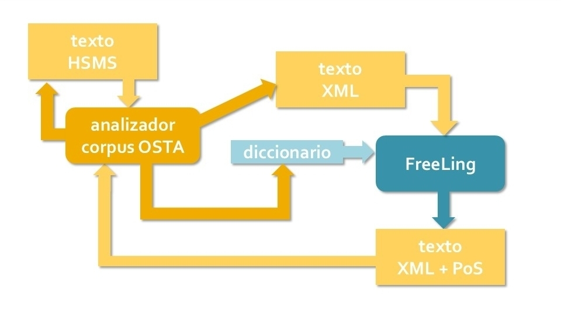
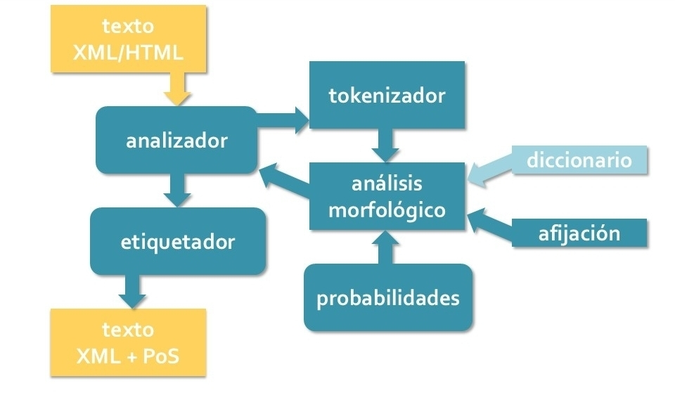

¿Qué es el Analizador Corpus OSTA?
El Analizador Corpus OSTA es una herramienta de análisis textual desarrollada por F. Javier Pueyo Mena para el procesamiento de las transcripciones paleográficas utilizadas en la elaboración del Old Spanish Textual Archive.

El Analizador Corpus OSTA integra las librerías de FreeLing (Carreras, Chao et al. 2004; Padró 2011, 2012) y las combina con una serie de rutinas para que, a partir del texto plano de las transcripciones paleográficas del HSMS, sea posible obtener un texto en formato XML con toda la información lingüística incorporada, manteniendo también todas las características estructurales de la obra para facilitar su lectura y su posterior presentación en los resultados de las consultas.

Sánchez Marco (2010, 2011, 2012) realizó una primera adaptación de FreeLing al español medieval, utilizando parte de las transcripciones semi-paleográficas del HSMS para conformar su golden corpus, entrenar el programa, y crear y modificar los recursos y las reglas en los ámbitos arriba señalados. A lo largo de los años los colaboradores del HSMS han seguido mejorando y ampliando considerablemente los recursos lingüísticos de FreeLing, en particular el diccionario, que ahora solo contiene formas medievales (más de 275.000), y las reglas de afijación, cuya sección de análisis de clíticos ha sido expandida.